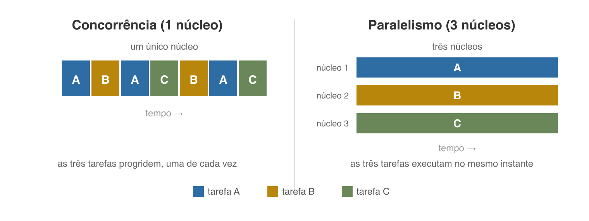
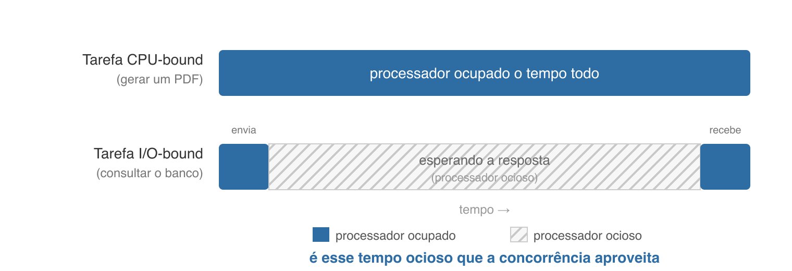
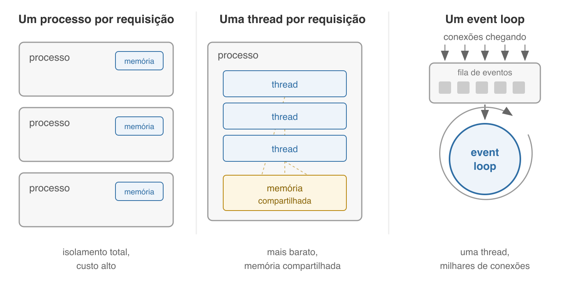
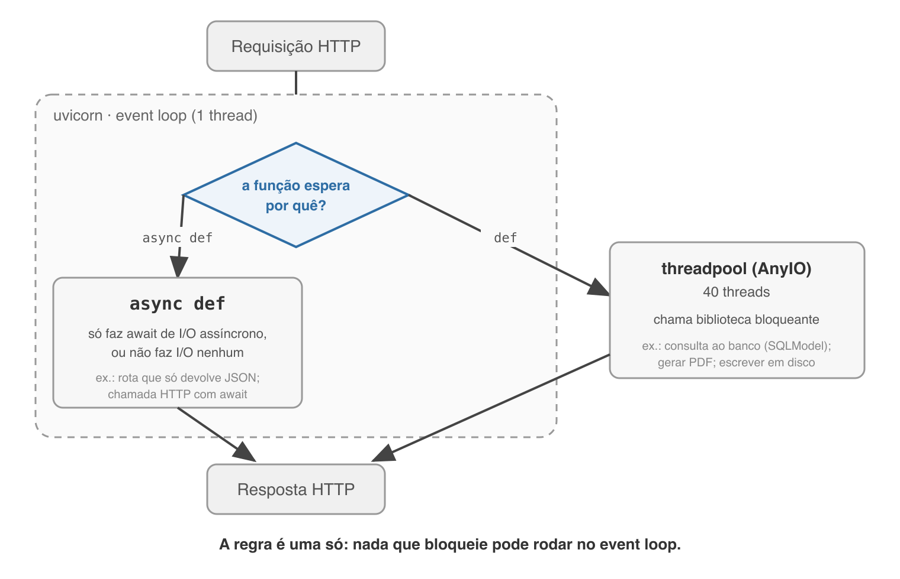

Programação Avançada — Aula 01.3
Universidade Unirios
Na aula 01, entre as vantagens do FastAPI:
Foi dito, foi anotado, e ninguém explicou o que significa.
Hoje essa dívida é paga.
requirements.txt — aula 01
annotated-types==0.7.0
anyio==4.14.2 ← ninguém instalou isto de propósito
click==8.4.2
fastapi==0.139.2
starlette==1.3.1
uvicorn==0.51.0
O AnyIO decide onde cada rota de vocês é executada. Está na máquina desde o primeiro dia.
async def realmente faz no FastAPI — e quando não usá-lo.Aula sem laboratório: as demonstrações são projetadas. Vocês preveem antes de cada uma.
enquanto verdadeiro:
conexão = espera_um_cliente()
pedido = lê(conexão)
resposta = processa(pedido)
escreve(conexão, resposta)
fecha(conexão)
Este servidor está correto. E é inútil: o segundo cliente só é lido depois que o primeiro foi embora.
E dobrar a velocidade do processador não resolve.
Guardem essa afirmação: em vinte minutos ela vai fazer sentido.
O engenheiro Dan Kegel publicou The C10K problem — de connection 10.000:
O hardware dava conta do volume. Quem não dava conta era a arquitetura de software.
KEGEL, D. The C10K problem, 1999 — kegel.com/c10k.html

PIKE, R. Concurrency Is Not Parallelism, 2012 · DIJKSTRA, E. W. Cooperating Sequential Processes, 1965
O vocabulário, porém, é mais antigo: vem de Edsger Dijkstra, em Cooperating Sequential Processes (1965) — o trabalho que introduziu processos cooperantes, exclusão mútua e semáforos.
PIKE, R. Concurrency Is Not Parallelism. Waza Conference, 2012 · DIJKSTRA, E. W. EWD 123, 1965
| Concorrência | Paralelismo | |
|---|---|---|
| O que é | forma de estruturar: várias tarefas em andamento | forma de executar: várias tarefas no mesmo instante |
| Depende de | como o software foi escrito | ter mais de um núcleo |
| Com 1 núcleo? | sim | não |
| Responde | "lido com muitos clientes?" | "calculo mais rápido?" |
Servidor web precisa da primeira coluna.
Um professor em horário de monitoria orienta um aluno e, enquanto ele tenta o exercício sozinho, passa a orientar um segundo, depois um terceiro — retomando cada um quando precisa.
O ganho existe porque o aluno passa a maior parte do tempo trabalhando sozinho. Se cada um exigisse atenção ininterrupta, não haveria o que intercalar.
Cunhada por Melvin Conway, ao descrever um compilador cujas partes cediam o controle umas às outras voluntariamente — em vez de uma chamar a outra e esperar.
É exatamente o que a palavra await faz: ceder o controle.
Voltaremos a ela no fim da aula, com outro nome: async def.
CONWAY, M. E. Design of a Separable Transition-Diagram Compiler. CACM, v. 6, n. 7, 1963

É esse tempo ocioso que a concorrência aproveita.
| Operação | Tempo real | Se 1 ns fosse 1 s |
|---|---|---|
| Ler da cache L1 | 0,5 ns | meio segundo |
| Ler da memória (RAM) | 100 ns | 1 min 40 s |
| Ler 4 KB de um SSD | 150 µs | 1,7 dia |
| Rede, mesmo datacenter | 500 µs | 5,8 dias |
| Busca em disco mecânico | 10 ms | 3,8 meses |
| Califórnia → Holanda → volta | 150 ms | 4,8 anos |
DEAN, J. Latency Numbers Every Programmer Should Know. Google, 2010
Consulta de 1 ms ao MySQL, na escala da tabela anterior:
≈ 11 dias
de processador parado, esperando a resposta chegar.
Por isso dobrar a velocidade do processador não resolvia o slide de dez minutos atrás.

Global Interpreter Lock — "o mecanismo usado pelo interpretador CPython para garantir que apenas uma thread execute bytecode Python por vez".
Documentação oficial do Python — Glossary: global interpreter lock · PEP 703 (Sam Gross, 2023) tornou o GIL opcional; há build sem ele desde o CPython 3.13, ainda não o padrão
A pergunta é uma chamada do sistema: select() (4.2BSD, 1983), kqueue (FreeBSD, 2000), epoll (Linux, 2002).
SCHMIDT, D. Reactor: An Object Behavioral Pattern for Concurrent Event Demultiplexing, 1995
Há uma linha de execução só. Logo, qualquer operação demorada trava todas as outras.
Esta é a contrapartida do modelo — e é a frase que explica tudo o que veremos a seguir no FastAPI.
asyncio entrou pela PEP 3156 (Guido van Rossum, 2012, no Python 3.4);async/await veio pela PEP 492 (Yury Selivanov, 2015, Python 3.5).| Modelo | A favor | Contra |
|---|---|---|
| Processo por requisição | isolamento total | caro; não escala |
| Thread por requisição | leve; memória comum | corridas; GIL no cálculo |
| Event loop | milhares de conexões | nada pode bloquear |

Documentação oficial do FastAPI — fastapi.tiangolo.com · AnyIO — anyio.readthedocs.io
| Declaração | Onde roda | Consequência |
|---|---|---|
async def | no próprio event loop | nada nela pode bloquear, sob pena de travar o servidor inteiro |
def | numa threadpool do AnyIO | pode bloquear à vontade; o loop segue livre — mas há um teto |
O FastAPI (Sebastián Ramírez, 2018) é construído sobre o Starlette (Tom Christie), que usa o AnyIO — aquele do requirements.txt.
python -c "
import asyncio, anyio.to_thread
async def m():
print(anyio.to_thread.current_default_thread_limiter().total_tokens)
asyncio.run(m())"
40.0
Não é um número inventado para a aula: é o limite padrão do AnyIO, conferível no venv de vocês.
@app.get("/sync-sleep") # def + espera bloqueante
def sync_sleep():
time.sleep(5)
@app.get("/async-blocking") # async def + espera bloqueante
async def async_blocking():
time.sleep(5)
@app.get("/async-sleep") # async def + espera assíncrona
async def async_sleep():
await asyncio.sleep(5)
Todas esperam cinco segundos. Muda onde a espera acontece.
| Rota | Duas requisições | Por quê |
|---|---|---|
/sync-sleep | 5,00 s | foi para a threadpool: esperaram juntas |
/async-blocking | 10,01 s | disputaram o event loop e foram enfileiradas |
/async-sleep | 5,00 s | await devolveu o loop |
/cpu | 1,94× de uma só | o GIL impede paralelismo de cálculo |
Números medidos com FastAPI 0.139.2 e Python 3.14.
curl -s http://127.0.0.1:8000/async-blocking &
curl -s http://127.0.0.1:8000/health
/health não tem relação alguma com a outra rota;/async-sleep, a mesma medição: 0,00 s.async não acelera nadaO senso comum diz que async def é "a versão rápida". A demonstração mostrou o contrário.
async apenas declara que aquela função vai rodar no event loop — e assume o compromisso de nunca segurá-lo.
Escrever async def numa função que bloqueia é pior do que escrever def.
async def quando a função só faz await de I/O assíncrono, ou não faz I/O nenhum — não há motivo para pagar o salto até uma thread;def quando a função chama biblioteca bloqueante: sessão do SQLModel, geração de PDF, escrita em disco;async def com chamada bloqueante dentro — é o pior dos dois mundos, e o erro mais comum em projetos FastAPI reais.ADR-0003 do projeto — docs/adr/0003-async-onde-ha-motivo.md
| Rota | Declaração | Por quê |
|---|---|---|
GET /health (aula 01) | async def | não faz I/O; responde na hora |
| books em memória (aulas 02–03) | async def | uma lista Python — não há espera |
| rotas com banco (aula 04+) | def | o driver do MySQL é bloqueante |
| upload de capa (aula 13) | async def | await file.read() é assíncrono |
| Reading Report em PDF (aula 14) | def | é CPU-bound |
A última linha é a razão de termos insistido na distinção: gerar PDF não é espera, é trabalho de processador.
async def roda no event loop; def vai para a threadpool;async não acelera: apenas assume o compromisso de não bloquear;Resultado de teoria de filas, de John D. C. Little (1961):
L = λ × W
Rearranjando para a vazão máxima: λ = L / W
LITTLE, J. D. C. A Proof for the Queuing Formula: L = λW. Operations Research, v. 9, n. 3, 1961
Com rotas def e o teto de L = 40 threads:
| Tempo por requisição (W) | Vazão máxima (λ) |
|---|---|
| 100 ms | 400 requisições por segundo |
| 1 s (consulta pesada) | 40 por segundo |
| 5 s | 8 por segundo — a 41ª espera na fila |
Lembram da pergunta da abertura — vinte pessoas ao mesmo tempo? Com a rota de três linhas da aula 01, o servidor nem sente. Com uma rota de 5 s, vinte cabem; cinquenta não.
uvicorn --workers 4 sobe quatro processos independentes, cada um com seu event loop e sua threadpool. É assim que se contorna o GIL de verdade — processos não compartilham interpretador;1. Classifique como I/O-bound ou CPU-bound: (a) redimensionar a capa; (b) buscar livros no MySQL; (c) contar palavras de um texto já em memória; (d) baixar dados de uma API externa; (e) gerar o PDF.
2. Decida def ou async def, com uma linha de justificativa: (a) GET /version; (b) GET /books com SQLModel; (c) upload com await file.read(); (d) GET /report.pdf com fpdf2.
3. Preveja o que acontece com o /health enquanto esta rota executa — e por quê:
@app.get("/relatorio")
async def relatorio():
dados = session.exec(select(Book)).all() # consulta bloqueante
return dados
async def no loop, def na threadpool de 40;Hoje tratamos o uvicorn como "quem executa o event loop", sem olhar para ele de perto.
O nome desse contrato começa com a letra que vocês aprenderam hoje:
A, de asynchronous.